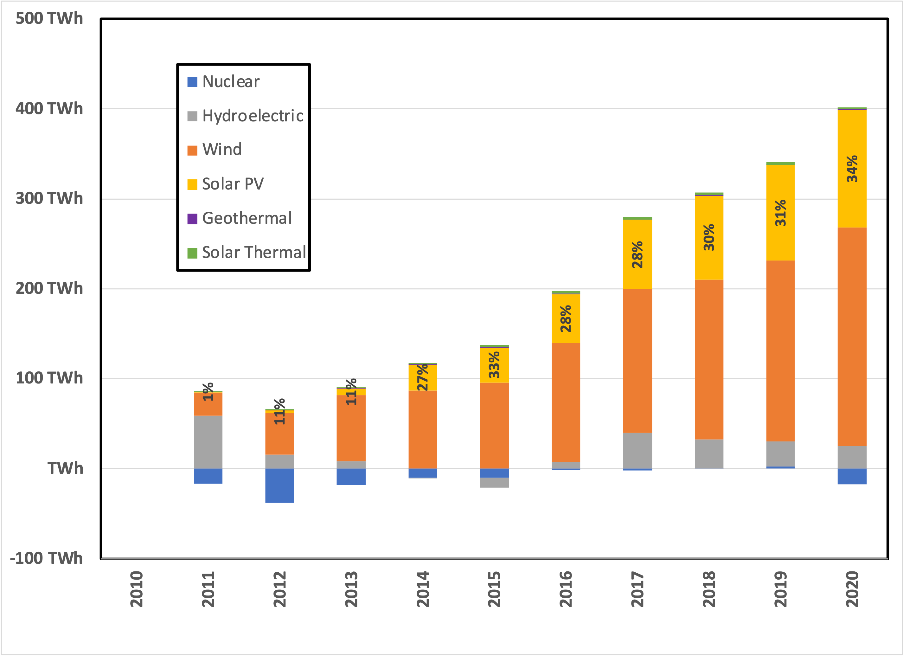
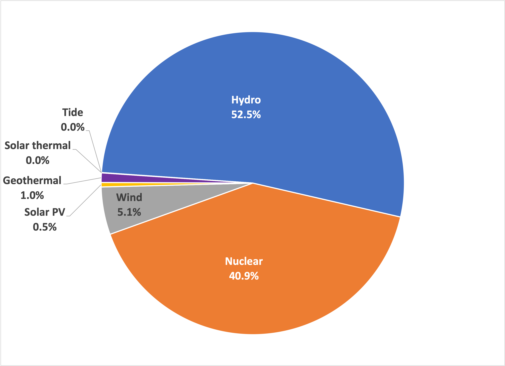
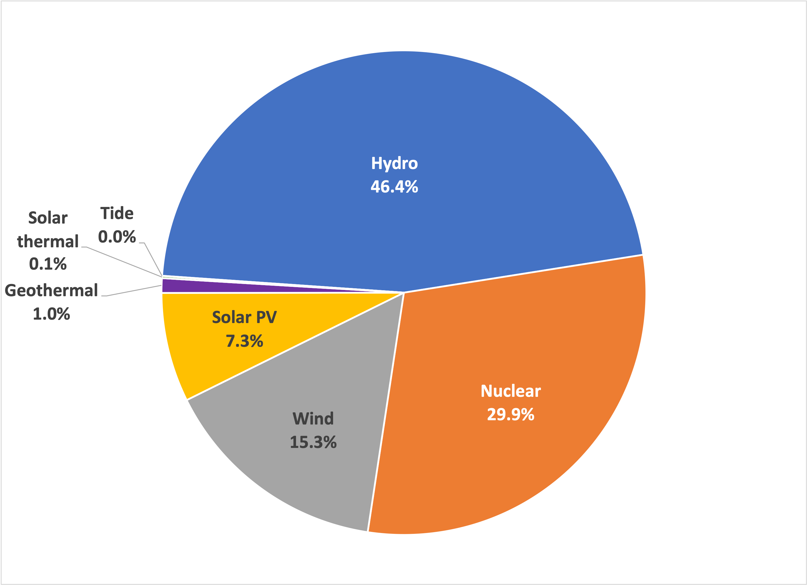
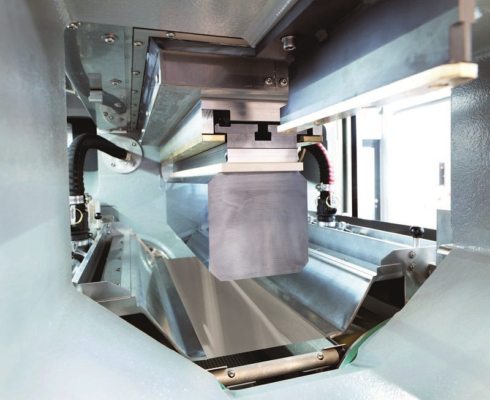

In the previous two installments 1 2 , we saw how the DOE’s SunShot program set an ambitious goal of reducing the cost of solar power (primarily from photovoltaic cells) to the cost of coal power at a “utility-scale”. Like its predecessor “moon shot” (Apollo) program, the program achieved a big, hairy, audacious goal in a decade and, in the process, allowed utilities to bring a significant amount of solar power to come online. Here’s what happened in the 2010s:

This graph shows remarkable progress, even though solar PV was only about 3% of total power generation in 2020, and electric power only represents about a third of the total energy consumed in the US.
What is true in the US is also true globally, with non-carbon power going from this in 2010:

to this, in 2019:

Globally 2.5% of electric power in 2019 was generated using solar cells, up from 0.1% in 2010.
How did this transformation happen? Well, it wasn’t regulation, it wasn’t (entirely) the vilification of coal, and it wasn’t (mainly) the small fraction of DOE’s budget that funded programs within SunShot. But it was undoubtedly American thought leadership that spotlighted the opportunity globally.
To understand how this happened from a technology perspective, I spent an hour with Howard Branz, who has spent his entire career in the field. That quickly saved me weeks of analysis and pain! A public “Thank You!” to Howard. Here’s what I took away from that conversation:
-
Despite several other attractive photovoltaic materials, crystalline silicon (Si) remains the most cost-effective,
-
Efficiency improvements 3 have been incremental (13% in 1980 to 19% today). Most of the improvements have happened between the sun and the silicon.
-
Cover glass modification to reduce reflection and surface fouling
-
Crystal surface modification for maximum light absorption
-
Better Si crystals
-
This latter point deserves a bit more color. The primary method for growing large single crystals of metals is the Czochralski method , discovered over 100 years ago. It depends on high purity metal and a tightly controlled process in an inert atmosphere (no oxygen). For Si crystals, which are used in microchips and solar cells, the process must be carried out with molten Si metal at a high temperature (2600°F). But, today, with many carefully controlled process improvements, the method can produce single crystals about a foot wide and two feet long, weighing hundreds of pounds.
When SunShot announced its goal, suppliers of this raw material (primarily in China) sensed an opportunity and focused their attention on scaling production. German engineers (mostly) also sensed an opportunity to use their skills to improve the process of wafer production. Specifically, to make solar cells, a much higher volume of crystal Si is needed (compared to the semiconductor industry), creating an opportunity in high-precision robotics to make wafers from large crystals:

As a rule, robots reduce manufacturing costs and improve reproducibility. As a result of these inspired innovations, the cost of manufacturing solar cells plummeted.
But that’s not all! As more solar panels were installed and more robust components (other than the solar cells) became widely available, manufacturers could justify more extended warranty periods. Then, the data supported longer projected lifetimes (more return on investment) for the financial types and lowered perceived financial risk. Technical advances include:
-
More durable electrical connections
-
More durable inverters (which are integrated with the modules rather than centralized)
-
More environmentally durable and maintainable mounts
So, why are utility-scale installations cheaper than solar panels on a house? The apparent factors of “economies of scale” come into play, including more labor-efficient installation processes and reduced transportation costs. Further, every residential installation requires custom engineering because every roof differs. Essentially, residential solar is “retail” while utility-scale is “wholesale”.
Let me end with the observation that the future of solar power is “bright” (pun intended!), mainly if the cost of large-scale storage decreases dramatically. Newer materials such as “perovskites” (engineered crystals akin to calcium titanate, CaTiO3) are being developed and could pave the way toward higher efficiency (lower cost) PV cells as well. But, as Howard pointed out, it’s going to be hard to beat the durability of crystal silicon—solar cells lose little or no efficiency over decades. After all, they’re fundamentally solid-state electronic devices.
Thank you for reading Healing the Earth with Technology. This post is public so feel free to share it.

For the nerds among my readers, cell efficiency is measured directly, using incident light equivalent to high noon at sea level.